1. ¿Qué es la Validez Geométrica?
La validez geométrica se refiere al cumplimiento de un conjunto de reglas que garantizan que una geometría (punto, línea o polígono) tenga una estructura coherente y sin errores. En los Sistemas de Información Geográfica (SIG), la calidad de las geometrías es tan importante como la de los atributos. Geometrías inválidas pueden causar errores graves en cálculos espaciales, visualizaciones incorrectas y fallos en la interoperabilidad entre plataformas.
Una geometría válida evita problemas como autointersecciones, anillos mal definidos o huecos mal ubicados. PostGIS implementa estas reglas a través de funciones como ST_IsValid y ST_MakeValid.
1.1. Tipos de Consistencia
La validez de los datos espaciales se puede evaluar desde tres perspectivas:
- Consistencia Geométrica: Asegura que la forma y estructura de cada geometría individual sea válida. Por ejemplo, un polígono debe estar cerrado y no puede tener auto-intersecciones. 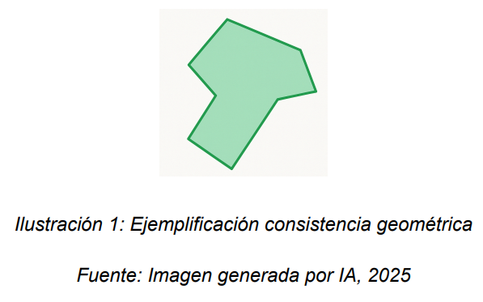
- Consistencia Topológica: Evalúa la relación espacial entre diferentes objetos (adyacencias, solapamientos, continuidad). Es esencial para que los datos reflejen correctamente la realidad geográfica. 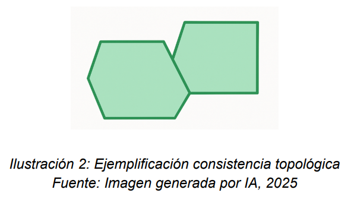
- Consistencia de Atributos: Se refiere a la coherencia entre la información espacial y los datos alfanuméricos asociados. Por ejemplo, que una geometría de polígono etiquetada como "parque" no tenga un atributo que la clasifique como "vía". 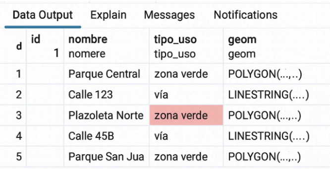
1.2. Reglas y Errores Comunes de Validez en Polígonos
Las geometrías de tipo polígono son las que presentan las reglas de validez más complejas. A continuación se detallan las más importantes:
-
Los anillos deben estar cerrados: El primer y último punto de la secuencia de coordenadas que definen un anillo deben ser idénticos.
Error común: El anillo queda "abierto" porque el último punto no coincide con el primero, impidiendo que represente un área cerrada.
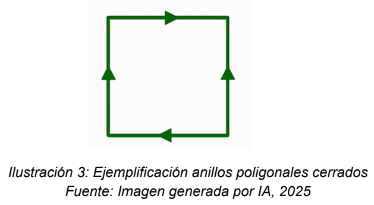
-
Los anillos interiores (huecos) deben estar dentro del anillo exterior: Un hueco no puede tocar ni cruzar el límite del polígono principal.
Error común: Un hueco se sale del polígono o toca su borde, lo cual es una violación topológica.
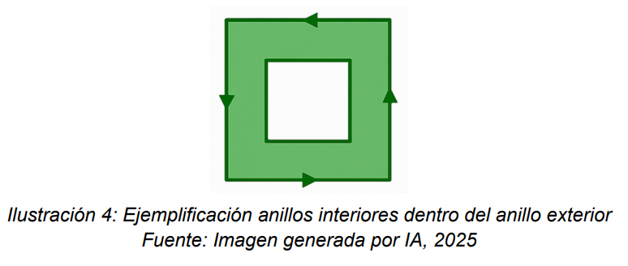
-
Los anillos no deben cruzarse a sí mismos: Un anillo no puede auto-intersectarse.
Error común: Durante la digitalización se crean bucles o "figuras en ocho", generando una geometría inválida.
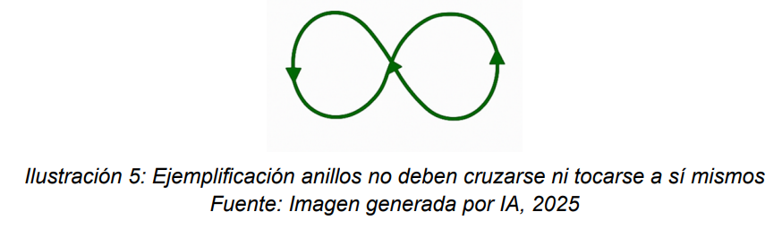
-
Los anillos no deben tocarse en más de un punto: Dos anillos distintos (por ejemplo, dos huecos, o un hueco y el borde exterior) solo pueden tocarse en un único vértice, pero no compartir un segmento de línea.
Error común: Dos anillos comparten un borde, creando ambigüedad espacial.
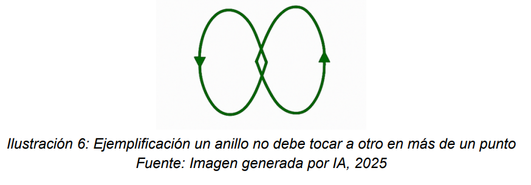
-
Los elementos de un multipolígono no deben solaparse: Cada polígono dentro de un multipolígono debe ser una entidad espacial distinta.
Error común: Dos polígonos dentro del mismo registro de multipolígono se superponen, lo cual es inválido.
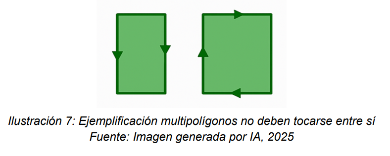
1.3. Consecuencias de Geometrías Inválidas
- Cálculos de área o longitud erróneos o nulos.
- Fallos en funciones espaciales como
ST_IntersectionoST_Union, que lanzan errores de topología (TopologyException). - Comportamientos inesperados en la visualización de mapas.
- Imposibilidad de insertar o actualizar registros en la base de datos.
2. Funciones Clave para la Validación en PostGIS
PostGIS nos proporciona un conjunto de herramientas para diagnosticar y corregir geometrías.
2.1. ST_IsValid(geometry)
Devuelve true si una geometría es válida y false si no lo es. Es la función principal para el diagnóstico.
-- Contar cuántas geometrías inválidas hay en la tabla de barrios
SELECT count(*)
FROM barrios_sancristobal
WHERE NOT ST_IsValid(geom);2.2. ST_IsValidReason(geometry)
Devuelve un mensaje de texto que describe por qué una geometría es inválida. Es extremadamente útil para entender la naturaleza del error.
-- Obtener la razón de la invalidez para las geometrías problemáticas
SELECT id, barriocomu, ST_IsValidReason(geom)
FROM barrios_sancristobal
WHERE NOT ST_IsValid(geom);Resultado esperado para geometrias invalidas
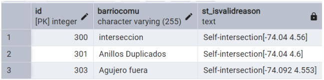2.3. ST_MakeValid(geometry)
Intenta corregir una geometría inválida, devolviendo una versión válida de la misma. A veces, esto puede resultar en un cambio del tipo de geometría (por ejemplo, un polígono inválido puede convertirse en una colección de geometrías).
-- Corregir una geometría inválida específica
UPDATE barrios_sancristobal
SET geom = ST_MakeValid(geom)
WHERE id = 301;3. Caso Práctico: Validación en la Localidad de San Cristóbal
Para ilustrar el proceso, trabajaremos con la capa de barrios de San Cristóbal. Primero, insertaremos intencionadamente algunas geometrías inválidas para poder diagnosticarlas y corregirlas.
3.1. Inserción de Geometrías Inválidas (con fines académicos)
A. Auto-intersección: Un polígono que se cruza a sí mismo.
INSERT INTO barrios_sancristobal (id, geom, barriocomu) VALUES
(300, ST_GeomFromText('POLYGON((-74.06 4.54, -74.02 4.54, -74.06 4.58, -74.02 4.58, -74.06 4.54))', 4326), 'interseccion');B. Anillos duplicados: Un polígono definido con el mismo anillo dos veces.
INSERT INTO barrios_sancristobal (id, geom, barriocomu) VALUES
(301, ST_GeomFromText('POLYGON((-74.08 4.56, -74.04 4.56, -74.04 4.6, -74.08 4.6, -74.08 4.56), (-74.08 4.56, -74.04 4.56, -74.04 4.6, -74.08 4.6, -74.08 4.56))', 4326), 'Anillos Duplicados');3.2. Diagnóstico y Corrección
Primero, identificamos las geometrías inválidas y la razón del error.
SELECT id, barriocomu, ST_IsValidReason(geom)
FROM barrios_sancristobal
WHERE NOT ST_IsValid(geom);El resultado nos mostrará los registros con ID 300 y 301, y el motivo del error, como "Self-intersection".
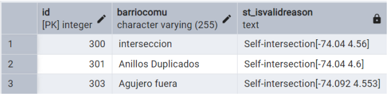Luego, procedemos a corregir todas las geometrías inválidas en bloque, guardando una copia de la geometría original para auditoría.
-- 1. Crear una columna para guardar la geometría original
ALTER TABLE barrios_sancristobal ADD COLUMN geom_invalid geometry DEFAULT NULL;
-- 2. Corregir las geometrías inválidas y respaldar la versión original
UPDATE barrios_sancristobal
SET
geom_invalid = geom,
geom = ST_MakeValid(geom)
WHERE NOT ST_IsValid(geom);3.3. Verificación Post-Corrección
Una vez corregidas, las operaciones espaciales como ST_Area o ST_Union funcionarán sin problemas.
-- Calcular el área de los polígonos (ahora válidos)
SELECT id, ST_Area(ST_Transform(geom, 9377)) AS area_m2
FROM barrios_sancristobal
WHERE id IN (300, 301);Esta consulta, que antes podría haber fallado o devuelto 0, ahora nos dará el área correcta en metros cuadrados.
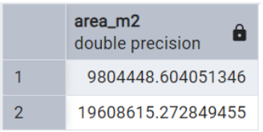4. Recomendaciones y Buenas Prácticas
- Validar antes de insertar: Siempre que sea posible, verifica la validez de una geometría antes de guardarla en la base de datos.
- Mantener copias de seguridad: Antes de una corrección masiva, respalda las geometrías originales.
- Usar sistemas de referencia adecuados: Realiza cálculos métricos (área, distancia) en sistemas de referencia proyectados (como SRID 9377 para Bogotá), no en geográficos (SRID 4326).
- Documentar errores: Lleva un registro de los tipos de errores de validez que encuentras. Esto puede ayudar a mejorar los procesos de captura de datos.